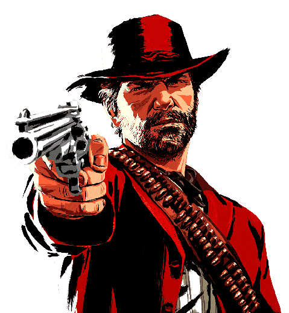

curiosidades red dead redemption
-curiosidade -
Um dos segredos de Red Dead Redemption 2 mais bizarros é o “próprio” Diabo em pessoa. Obviamente, não se trata realmente do Lúcifer. No Rancho Pronghorn, há uma pequena entrada para uma caverna bem misteriosa. Após andar pelos caminhos iluminados, uma voz surge dizendo para Arthur/John se autodenominando como o Diabo.
A estranha pessoa logo aparece e admite não ser o “anjo maligno”. Todavia, ele deseja se tornar, o que pode ser ainda pior, em suas palavras.
-curiosidade-
Em Big Valley, é possível encontrar uma grande caixa de madeira quebrada. Até aí, nada demais. No entanto, para a surpresa de muitos, uma estátua de um gorila dentro dela. Não há qualquer explicação sobre o seu paradeiro. Muitos especulam que uma taxidermista, pessoa que utiliza o couro do animal para fazer uma manequim, perto da região seja a responsável pela peça.
-curiosidade-
Trem-Fantasma
Entre os segredos de Red Dead Redemption 2, há muitas referências à ficção científica e ao terror. Uma que não pode deixar passar despercebido pelos jogadores é o Trem-Fantasma. Basta ir para a região de Leymore e seguir os trilhos até a placa de “Bem-vindo a Leymore”. Espere até às três da manhã para se deparar com o — assustador — momentos, pelo menos para quem for pego de surpresa
